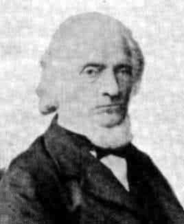
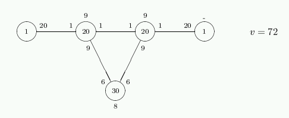

Ludwig Schläfli (1814-1895) is the discoverer of the 27 lines on a cubic surface.
It the E6(1) graph, the local graph of the E7(1) (Gosset) graph. Its local graph is the Clebsch graph. It is the complement of the collinearity graph of the unique generalized quadrangle GQ(2,4).
This graph is uniquely determined by its parameters (Seidel).
For example, the surface X3+Y3+Z3+W3 = 0 contains the 27 lines like <(1,–a,0,0),(0,0,1,–b)> where a3 = b3 = 1. (The values a, b can each be chosen in 3 ways, and the coordinate split XY|ZW can be chosen in 3 ways, 27 choices altogether.)
Each of these 27 lines intersects 10 others, and these 10 intersect in pairs, so that each of the 27 lines is in 5 coplanar triples and there are 45 coplanar triples altogether.
In the example, the lines <(1,–a,0,0),(0,0,–b,c)> and <(1,0,–b,0),(0,–a,0,c)> and <(1,0,0,–c),(0,a,–b,0)> are coplanar, and meet in the three points (1,–a,–b,c), (1,–a,b,–c), (1,a,–b,–c). In a field of characteristic 2 these three points coincide and we find 45 points and 27 lines. Over GF(4) the surface is a unital, and we see that the group is U(4,2).
a) A vertex.
There are 27 of these, forming a single orbit.
The stabilizer is 24:Sym(5) with vertex orbit sizes 1+10+16.
In the representation in O–(6,2) these are the isotropic points.
In the representation in U(4,2) these are the totally isotropic lines.
b) A K2×K6 subgraph (a "double six").
There are 36 of these, forming a single orbit.
The stabilizer is Sym(6)×2 with vertex orbit sizes 12+15.
The orbits of size 15 are the subsets that carry a sub-GQ(2,2) of GQ(2,4).
In the representation in O–(6,2) these are the nonisotropic points.
The largest cliques in Γ have size 6, and Γ has 72 6-cliques, forming a single orbit. The stabilizer of one has orbit sizes 1+20+30+20+1 on them. These 72 6-cliques form a root system of type E6, where inner product 2, 1, 0, –1, –2 corresponds to intersection size 6, 3, 1, 0, 0. The last two orbits (20+1 6-cliques disjoint from a given one) are distinguished since the 20 have distance 2 and the 1 has distance 3 to the given one in the graph on the 6-cliques, adjacent when they have 3 points in common.

The antipodal quotient of this graph, that is, the graph on the double sixes, is strongly regular with parameters (v,k,λ,μ) = (36,20,10,12).
The graph Γ has 72+216 maximal cliques, namely the above 72 6-cliques, and 216 maximal 5-cliques, forming a single orbit. These 5-cliques are 5-cocliques in GQ(2,4), the common neighbours of two nonadjacent vertices, and hence correspond to the edges of Γ. The stabilizer of a maximal 5-clique, that is, the stabilizer of an edge, is Sym(5)×2 with vertex orbit sizes 2+5+10+10. In the representation in O–(6,2) these are the O–(4,2) elliptic quadrics.
c) A nice partition into 3-cocliques
GQ(2,4) contains 200 spreads falling into two orbits with sizes 40+160.
Dually, GQ(4,2) contains two types of ovoids (Brouwer & Wilbrink).
The unitary (GQ(4,2)) formulation distinguishes the 40
plane ovoids (determined by the 40 nonisotropic points)
and the 160 tripods (with 3x3=9 isotropic points on the three
hyperbolic lines pq, pr, ps where {p,q,r,s} is a basis
of nonisotropic points).
Of the nice ("plane") type there are 40, forming a single orbit. The stabilizer is 3+1+2:2S4. In the representation in U(4,2) these are the nonisotropic points.
d) A partition into three GQ(2,1).
There are 40 of these, forming a single orbit.
The stabilizer is 33:(S4×2)
with vertex orbit size 27.
GQ(2,4) has 120 sub-GQ(2,1) forming a single orbit. Each GQ(2,1) is disjoint from two others (that are disjoint) and hence determines a unique partition.
In the representation in O–(6,2) these are the ways of writing the space as orthogonal direct sum of three elliptic lines O–(2,2): given any two O–(2,2) their direct sum is a O+(4,2) with a GQ(2,1).
In the representation in U(4,2) these are the orthogonal bases consisting of 4 nonisotropic points: any two basis points are orthogonal to three isotropic points, and the basis determines 18 points of weight 2, that is, 18 lines of GQ(2,4). The three splits of the basis into pairs determine the three GQ(2,1), that are K3,3 in GQ(4,2).
Given a 3GQ(2,1), the point-line incidence graph where the points are the 27 vertices of Γ and the lines are the 27 3-cocliques not inside one of the three GQ(2,1), is the Gray graph.
e) A 3-coclique (line in GQ(2,4)).
There are 45 of these, forming a single orbit.
The stabilizer is (2.(A4 × A4).2).2
with vertex orbit sizes 3+24.
In the representation in O–(6,2) these are the totally
isotropic lines.
In the representation in U(4,2) these are the isotropic points.
J. J. Seidel, Strongly regular graphs with (–1,1,0) adjacency matrix having eigenvalue 3, Lin. Alg. Appl. 1 (1968) 281-298.